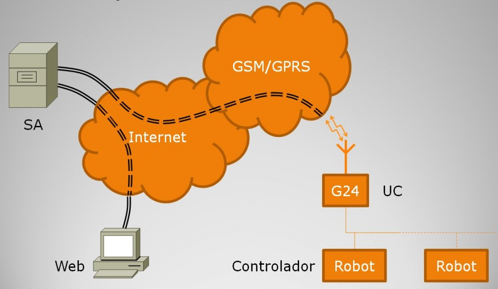
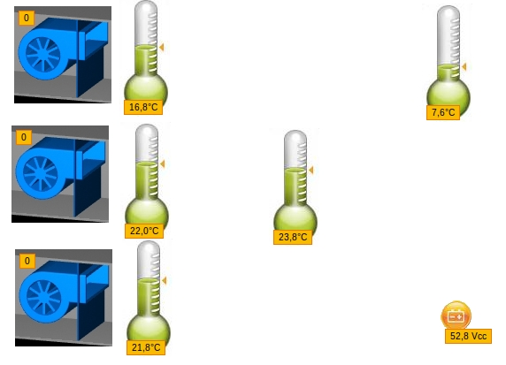

Hace más de un año participo en un proyecto de desarrollo de un sistema SCADA, específicamente en la capa de comunicación. La distribución física es algo como esto:
En cada edificio hay una red 485 con dispositivos de hardware propio (aka Robot) y un módulo celular (Motorolla G24) con salida a Internet vía GPRS. Esos módulos se registran en un servidor (escrito con Twisted) para ser luego sondeados: se registran sus mediciones, hay gráficos en tiempo real, se puede hacer telecomando y encender un equipo a la distancia o cambiar un set point; entre otras cosas.
Nuestra primera implementación estaba inspirada en el protocolo Modbus ASCII, pero bastante alejada del estándar. Nos sirvió por bastante tiempo y no apegarnos a una especificación nos permitió acelerar el desarrollo; especialmente del hardware.
Modbus es un protocolo de línea maestro/esclavo en donde el maestro realiza peticiones de lectura o escritura sobre algún o algunos registros en un esclavo. El protocolo define 4 tipos de registros (analógicos o digitales, de solo lectura o lectura-escritura) y fue pensado para funcionar sobre una línea serie; existen dos sabores: RTU, dónde los datos viajan en forma binaria y la ocupación del canal es optimizada y ASCII, menos eficiente pero legible por humanos. Se puedo leer más al respecto en Wikipedia o en la página oficial del protocolo.
Hace algunos meses empezamos a utilizar Mango m2m. Mango tiene todos los componentes de interfaz de usuario que se pueden necesitar en un SCADA en adición a la posibilidad de conectarle distintas fuentes de datos (desde Modbus Serie a un motor de base de datos); las más interesante para nosotros es Modbus TCP.

Modbus TCP extiende el protocolo original para poder utilizarlo sobre la red de redes en lugar de sobre una línea serie. Por ejemplo, una de las cosas que hace es agregar al paquete enviado un número consecutivo para solucionar el problema de paquetes perdidos o duplicados.
Teníamos entonces, por un lado Mango que sabe hablar Modbus TCP y por el otro los robotitos hablando un dialecto de Modbus ASCII. En el medio, el servidor de comunicaciones. La pregunta en este punto era cómo unir ambos extremos, de manera de aprovechar esta herramienta que soluciona muchos de nuestros requerimientos.
Allí es donde entra en acción pymodbus, una implementación en Python del stack Modbus. No solo está escrita en Python, sino que está implementada utilizando el framework Twisted, el mismo que venía usando para el servidor de comunicaciones. Utilizando pymodbus pude engañar a Mango y hacerle creer que hablaba contar dispositivos Modbus TCP cuando en realidad interceptaba sus peticiones, enviaba los comandos necesarios a los robots y contestaba con la respuesta correcta.
En el camino encontré varios problemas en la librería, los fui reportando y enviando parches para solucionarlos. A lo último eran tanto los cambios que enviaba y empecé a modificar el core de la librería para que funcione con deferrers (es decir, siguiendo la filosofía de Twisted) que recibí permiso de commit en la rama devel.
Nota: el esquema descripto funcionó bastante tiempo. Actualmente seguimos avanzando y los robots ya hablan Modbus ASCII estándar a la vez que el componente intermedio adelgazó para convertirse en un traductor o gateway.
{kind=link}
{kind=link}
{kind=link}
{kind=link}
{kind=link}
{kind=link}